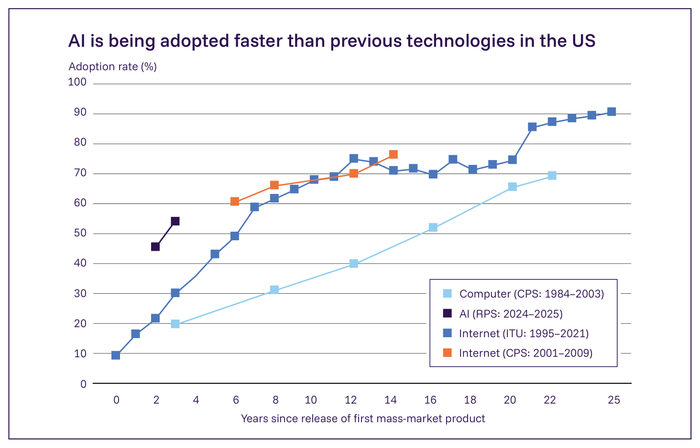
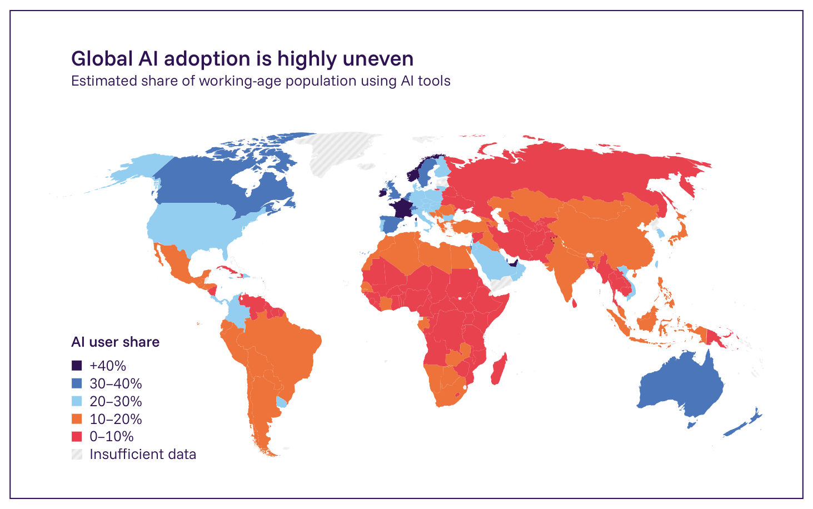

2.3. システミックリスク
2.3.1. 労働市場への影響
主要情報
- 汎用AIシステムは、世界中の多くの職務に関連するタスクを自動化または支援できるが、労働市場への影響を予測することは困難である。先進国の雇用の約60%、新興国の雇用の約40%が汎用AIにさらされているが、これによる影響は、AIの能力がどのように発展するか、労働者と企業がどれほど迅速にAIを採用するか、そして機関がどのように対応するかに左右される。
- 現在の証拠は、急速だが不均一なAIの採用と、入り混じった雇用への影響を示している。採用と生産性の向上は、国、分野、職種、タスクによって大きく異なる。オンラインのフリーランス市場からの初期の証拠は、AIが、文章作成や翻訳のような容易に代替可能な仕事への需要を減らした一方、機械学習プログラミングやチャットボット開発のような補完的なスキルへの需要を増大させたことを示唆している。
- 経済学者は、将来の影響の規模について意見が一致していない。一部は、雇用水準への総体的な影響が限られた、緩やかなマクロ経済的影響を予測している。他の者は、AIがほぼすべてのタスクにおいて人間の性能を上回るならば、賃金水準と雇用率を著しく低下させると論じている。意見の相違は部分的に、AIが最終的にほぼすべてのタスクを人間よりも費用対効果高く遂行するようになるかどうか、そして新しい種類の仕事が創出されるかどうかについての異なる前提に由来する。
- 前回の報告書の公表（2025年1月）以降、米国とデンマークからの新しい研究は、ある職種のAIエクスポージャーまたはAIの採用と、全体的な雇用との間に関係を見出さなかった。しかし、他の複数の研究は、2022年後半以降、最もAIにさらされている職種において、キャリア初期の労働者の雇用が減少している一方、同じ職種における年配の労働者の雇用は安定しているか、あるいは増加していることを見出した。
- 政策立案者にとっての主要な課題は、自動化やスキル需要の変化によって影響を受ける労働者への著しい負の影響を引き起こすことなく、生産性の利益を可能にすることである。労働市場のリスクと生産性の向上がしばしば同じAIの応用に由来するため、これは特に困難である。影響の証拠は時間をかけて徐々に現れる可能性が高いため、潜在的な政策対応の適切なタイミングを決定することも困難である。
専門家は、ますます高度化する汎用AIの普及が、職務の入れ替わりを加速させ、労働需要を再形成することによって、多くの職業を変革すると予想している。しかし、これらの影響の規模とタイミングは不確実なままである。汎用AIシステムは、世界の雇用のかなりの割合に関連するタスクを遂行できる（754*, 755, 756）。ある研究は、先進国の雇用の約60%、新興国の雇用の約40%が汎用AIに高くさらされていると推定している。これは、これらの職務で遂行されるタスクが、AIシステムが技術的にそれらを遂行または補完できるために影響を受けうるという意味においてである（757）。AIの労働市場への影響は、能力がどのように発展するか、システムがどれほど迅速に採用されるか、そしてAIシステムが既存のタスクを遂行する人間を代替するか、労働者の生産性を増強するか、あるいは人間が遂行するまったく新しいタスクを創出するかに左右される。機関もまた、例えば自動化ではなくタスク創出と労働の増強に向けてAIの開発を導くインセンティブと政策を設定することによって（あるいはその逆によって）、その対応を通じてこれらの結果を形作るだろう（758）。
AIの採用は急速だが、不均一である
これまでのところ、汎用AIの採用は一部の場所で急速であるが、国、分野、職種にわたって非常に不均一である。米国では、汎用AIはインターネットのような以前の技術よりも速く普及している（239）（Figure 2.14）。世界的には、採用率は、アラブ首長国連邦とシンガポールの50%超から、多くの低所得国における10%未満まで幅がある（Figure 2.15）。個々の国の中でさえ、ばらつきは大きい可能性がある。例えば米国では、分野にわたる報告された利用率は、情報分野の18%から建設業・農業の1.4%まで異なる（759）。利用パターンについての証拠は、現在のシステムが主に認知的職務における高所得労働者に恩恵をもたらし、低所得者にはより少ない利益しかもたらさないことを示唆している（760）。

米国ではAIは以前の技術よりも速く採用されている
Figure 2.14: AI、インターネット、パーソナルコンピューターの採用率。採用率とは、各技術の最初の大衆市場向け製品の発売後（AIの場合はOpenAIのChatGPTの発売）の比較可能な時点で、全国代表調査を通じて測定された、各技術を使用していると報告した労働年齢の成人（18～64歳）の割合を指す。このデータは、米国において、汎用AIがパーソナルコンピューターやインターネットのような他の技術よりも速いペースで採用されていることを示唆している。出典: Bick et al. 2024 (239)。
生産性への影響はタスクと職務によって異なる
汎用AIによる生産性への影響もまた、職務とタスクによって著しく異なる。タスクレベルの生産性研究の最近のレビューは、生産性の向上が、統制された研究では通常20～60%、実世界の作業環境におけるほとんどの実験では15～30%の範囲であることを見出したが、高い方にも低い方にも外れ値がある（129, 761, 762）。AIの利用による生産性の向上は、賃金や雇用といった結果に様々な影響を与えうる。例えば、生産性の向上により労働者がより多くの産出量を生産できるようになる場合、その産出物への需要が同等かそれ以上の規模で成長すれば、これは雇用および/または賃金を増加させうる。しかし、生産性の向上により企業がより少ない労働者で同じ産出量を維持できるようになる場合、需要が拡大しなければ、企業は雇用または賃金を削減することを選ぶかもしれない（763, 764, 765, 766, 767, 768, 769）。自動化は当初、影響を受けるタスクにおける労働需要を減少させる可能性があるが（763）、結果として生じる生産性の向上は、その後経済成長を刺激し、自動化されていない活動における人間の労働への需要を増加させ、新しい雇用機会を創出する可能性がある（770, 771, 772）。
初期の雇用への影響は入り混じっているが、特定の職務と若手労働者への集中的な影響を示唆している
AIの雇用への影響についての初期の証拠は入り混じっている。デンマークと米国からの2つの国レベルの研究は、AIエクスポージャーまたは採用と、全体的な雇用の変化との間に判別可能な関係を見出していない（760, 774）。総体的な影響は最小限であるにもかかわらず、他の研究は特定の職務への集中的な影響を見出している。例えば、ある研究は、ChatGPTがリリースされてから4ヶ月後、あるオンライン労働プラットフォームにおいて文章作成の仕事が2%減少し、ライターの月収が5.2%減少したことを見出した（767）。最近の研究はまた、ChatGPTのリリース後、文章作成や翻訳のような代替可能なスキルを用いたフリーランス業務への需要が急激に減少した一方、機械学習プログラミングへの需要は24%増加したことを見出した（768）。一部の研究はまた、AIの採用が若手労働者に不釣り合いに影響を与えていることを示唆している。新しいデータは、米国のAIにさらされた職務における雇用が、ChatGPTのリリース以降、若い労働者については減少している一方、年配の労働者については横ばいか増加していることを見出している（775, 776）。英国では、ある研究が、AIへのエクスポージャーが高い企業は、特に若手の職について新規採用を減速させていることを見出した（777）。

世界のAI採用は非常に不均一である
Figure 2.15: 国別のAI採用率。アラブ首長国連邦とシンガポールは最も高い採用率を示しており、労働年齢人口の半数以上がAIツールを使用している。採用率の高い経済の大部分はヨーロッパと北米にある。これらの推定値は、主にMicrosoft Windowsユーザーからの匿名化データに基づいており、国によって異なるパーソナルコンピューターの所有率とモバイル機器での利用を考慮して調整されている。出典: Microsoft, 2025 (773*)。
将来のシナリオと不確実性
AIはスキル需要が急速に変化する労働市場調整の期間をもたらす可能性がある
現在のAIシステムは複雑なタスクに人間の監督を必要とするが、より高い信頼性と自律性で、より広範な作業を費用対効果高く自動化しうる潜在的な将来のシステムの労働市場への影響について懸念がある。そのようなシステムが雇用にどのように影響を与えるかを予測することは困難である。過去において、新しい自動化技術は労働者に様々な影響を与え、労働者が代替された形態の仕事から需要が増大している新しい仕事に移行するにつれて調整期間をもたらした（772）。歴史的に、これらの調整期間は代替された労働者に著しい困難をもたらしたが、長期的には多くの労働者にとって実質賃金の力強い向上も後に続いた（778）。この歴史的先例は、AIの能力が著しく進歩しても、依然として豊富な雇用機会がある可能性があるが、中核的な政策上の課題は、AIが経済全体に普及するにつれて労働者が急速に変化するスキル需要に適応できることを確実にすることであろうことを示唆している。
汎用AIの影響は以前の自動化技術のものとは異なる可能性がある
他の経済学者は、汎用AIがほぼすべてのタスクにおいて人間の性能を上回るならば、最終的に賃金水準と雇用率を著しく低下させる可能性があると論じている（779, 780, 781）。一部の証拠は、自動化が、新しい労働集約的タスクの創出を伴う場合に、より良い労働市場の結果を生み出すことを示唆している（758）。AIの開発が新しい労働集約的タスクを大規模に生み出すかどうかは不確実なままである。計算資源が拡大し、AIシステムがより費用効率的になるにつれて、人間の労働者を自動化するための競争圧力は激化する可能性がある（782）。
将来の影響を形作る主要な要因
労働市場への影響の規模は、いくつかの主要な要因に左右される。第一に、AIシステムが最終的にどれほど広く高性能になるかである。経済学者の間の多くの意見の相違は、汎用AIが最終的にほぼすべての経済的に価値のあるタスクを人間よりも費用対効果高く遂行するようになるかどうかについての異なる前提に由来する。第二に、能力がどれほど速く向上するかである。AIエージェントが、より高いレベルの目標を追求する中で、より長く複雑なタスクの連続を確実に管理するといった、より大きな自律性で様々な分野にわたって行動する能力をわずか数年以内に獲得すれば、これはおそらく労働市場の混乱を加速させるだろう（99, 783）。第三に、採用のペースである。たとえ能力が急速に進歩しても、普及は、制度的・組織的な摩擦（240, 784）、システム統合の要件（785, 786）、コストの障壁（787）によって遅くなる可能性がある。システムが狭い範囲にとどまり、能力が徐々に向上し、採用が緩やかであれば、影響はおそらくより緩やかになり、労働者と政策立案者の両方が適応するためのより多くの時間を持つだろう（779, 788）。
不平等への含意
汎用AIは、国内および国家間の所得と富の不平等を拡大しうる。AIの採用は、AIを開発または利用する企業の株主のような資本所有者へと、労働から収益をシフトさせる可能性がある（789, 790, 791）。世界的には、熟練した労働力と強力なデジタルインフラを持つ高所得国が、低所得国よりも速くAIの恩恵を獲得する可能性が高い（757）。ある研究は、先進国におけるAIの経済成長への影響は、低所得国におけるそれの2倍を超える可能性があると推定している（792）。AIはまた、国内の自動化をより費用対効果高くすることによって、労働集約的サービスをオフショア化するインセンティブを減らす可能性があり、これは従来の開発経路を潜在的に制限する（793）。
更新情報
前回の報告書の公表（2025年1月）以降、新しい研究は、雇用の変化とAIエクスポージャーおよびAI採用の両方との関係について、より大きな明確さを提供している。上記で議論したように、デンマークと米国からの新しい国レベルの研究は、AIの採用とエクスポージャーが総体的な雇用に影響を与えなかったことを見出した（760, 774, 794）。しかし、他の研究は、AIにさらされた職種における若い労働者への需要の減少を見出しており（775, 776）、ある英国の研究によれば、ChatGPTのリリース後、AIに高くさらされた企業では、特に若手の職において新規採用が著しく減速した（777）。加えて、最近の研究は、自動化の影響が、ある職務の中でどのタスクが自動化されるかによって一般に著しく異なることを確認している。すなわち、比較的専門的なタスクを自動化することは、ある職務のスキル要件を低下させる傾向があり、その職務における雇用機会を拡大するが、賃金を低下させる。他方、ある職務の中で比較的初心者向けのタスクが自動化される場合、これはその職務のスキル要件を上昇させる傾向があり、賃金を増加させるが総雇用を減少させる（769）。採用もまた前回の報告書以降加速している。汎用AIを使用している米国の労働者の割合は、2024年12月の30%から2025年半ばまでに46%に上昇した（795）。
証拠のギャップ
AIの採用とその雇用の結果との関連についてのデータは限られている。ほとんどの研究は、職種レベルの採用データが（特に米国以外では）依然として乏しいため、「AIエクスポージャー」のようなAI利用の代理指標に依拠している。利用データを収集し、それを雇用、賃金、採用の傾向に結びつけることは困難であり、これはAIの普及が異なる労働者集団にどのように影響を与えるかを追跡すること、あるいは実証的根拠に基づく予測を行うことをより困難にしている。さらに、労働市場リスクについての研究はしばしば自動化と代替の影響に関心を寄せているが、AIの採用がどのような新しい仕事を創出しているか、あるいはAIの結果としてキャリアパスがどのように変化しうるかを決定するための研究はより少ない。最後に、効果的な労働者保護についての証拠は限られている。再訓練はしばしば政策的解決策として提案されるが、その有効性についての研究は入り混じった結果を示している（796, 797）。
緩和策
労働市場リスクを緩和するために提案されている技術的手段には、労働力の適応のための時間を確保するためにAIの展開のペースを調整することや、タスクの自動化と並行して新しい労働集約的タスクを創出することによって労働者を補完するAI開発を優先することが含まれる（798*, 799）。しかし、あるAIシステムが労働者を代替するか、それを補完するか、あるいは新しい機会を創出するかを事前に予測することはしばしば困難である。結果は、システムがどのように展開されるか、そして労働市場がどのように反応するかに左右される（771, 800）。
評価とモニタリングもまた、労働者と政策立案者が労働市場への影響に備え対応するのを助ける可能性がある。実世界の作業タスクにおけるAIシステムの能力をテストするベンチマークは、展開後のこれらのシステムの雇用または賃金への影響を確実には予測しないかもしれない。しかし、それらは、どのタスク、職種、分野が最も影響を受けやすいかについて、ある程度の指標を提供できる。AIの採用が雇用と賃金にどのように影響を与えるかについての展開後データを収集することもまた、実際の影響への可視性を改善し、将来の影響の予測を改善できる（801）。
政策立案者にとっての課題
政策立案者にとって、中心的な課題は、経済全体の生産性の成長を停滞させることなく、AI関連の労働市場の混乱を通じて労働者を支援することである。これには、AIの採用による生産性の向上と、一部の労働者に生じうる不本意な職務の代替のコストとのバランスを取ることが必要である（802）。AIの労働市場への影響のペースと規模についての不確実性を考慮し、研究者は、企業投資と労働者訓練の決定のために十分な規制上の確実性を提供しつつも、緩和策が適応可能であることの必要性を強調している（803）。汎用AIシステムがより高性能になり広く展開されるにつれて、政策立案者は、AIの採用率、職種にわたる雇用と賃金の変化、そして雇用主のスキル需要の変化をモニタリングし、影響を予期し政策対応を調整する助けとすることができる。